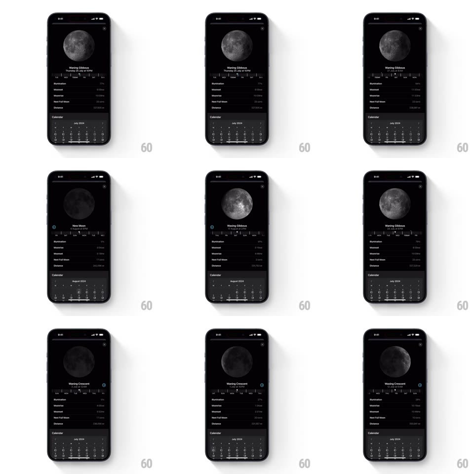

Media
Frame-by-frame

Rebuild this interaction 1:1: Apple Weather's moon phase detail - dragging the day slider moves the shadow across a photorealistic moon while every metric and the calendar grid follow.

Rebuild this interaction 1:1: Apple Weather's moon phase detail - dragging the day slider moves the shadow across a photorealistic moon while every metric and the calendar grid follow.
## Integration
Integration: stack-agnostic spec - springs given as stiffness/damping, timed motions as duration + curve; map every value to your framework and animation library of choice.
## Scene
Dark moon detail screen: a large photorealistic moon at top, the phase name and date beneath ("Waning Gibbous - Thursday 25 July at 10 PM"), a day-strip slider, a metrics list (Illumination, Moonrise, Moonset, Next Full Moon, Distance), and a month calendar grid where each day cell carries a tiny moon-phase icon.
## Motion spec
Pattern: scrub-linked phase renderer.
- Drag the day slider (1:1): the moon's shadow terminator sweeps across the disc continuously - a soft-edged shadow with a slight blue-gray falloff, never a hard cut; the disc also subtly rotates (libration, +-3 degrees over the month).
- The phase name and date roll to the new values at each boundary (vertical roll, 180ms); the metrics list values tick over with quick flips (120ms) as they change.
- Crossing a month boundary: the calendar grid slides horizontally to the new month (250ms, ease-out, direction matches the drag) and each day's moon icon is already phase-accurate.
- The selected day in the calendar gets a white ring that slides between cells (spring ~400/26) in sync with the slider.
- Release: slider settles to the day boundary (~380/26); the terminator eases its last fraction.
## Calibration
- Terminator softness is constant (~8px blur); phase accuracy matters more than drama.
- Calendar day icons and the hero moon must always agree - one phase model drives both.
## Reduced motion
Moon crossfades between phases; calendar slides without ring glide.
## Don't miss
- The moon is photographic with real crater texture; a flat circle with a shadow layer reads wrong.
- Illumination percentage and the visual lit area must match.